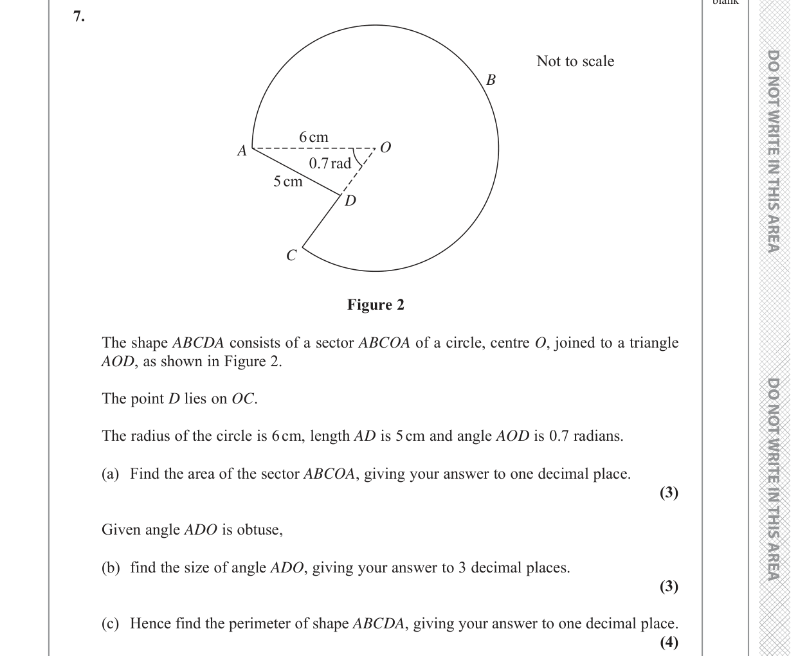

<!doctype html>
<html lang="en">
<head>
<meta charset="utf-8" />
<meta name="viewport" content="width=device-width,initial-scale=1" />
<title>P1 ch3 · Jun 2019 Q7</title>
<style>
:root{
  --ink:#1d1d1f; --ink-2:#2c2c2e; --muted:#6e6e73; --muted-2:#86868b;
  --line:#d2d2d7; --bg:#fff; --bg-soft:#fbfbfd; --bg-tint:#f5f5f7;
  --blue:#0071e3; --blue-soft:#e8f0fa; --blue-deep:#0033a0;
  --orange:#ff9500; --green:#34c759; --purple:#af52de; --red:#ff3b30;
  --r-sm:8px; --r-md:12px; --r-lg:18px;
  --content-w:1100px;
}
*{box-sizing:border-box}
html,body{margin:0;padding:0;
  font-family:-apple-system,BlinkMacSystemFont,"SF Pro Display","SF Pro Text","Helvetica Neue",sans-serif;
  color:var(--ink);background:var(--bg);font-size:16px;line-height:1.55;-webkit-font-smoothing:antialiased;
}
.mono{font-family:"SF Mono",Menlo,Consolas,monospace;font-variant-numeric:tabular-nums;}
a{color:var(--blue);text-decoration:none;} a:hover{text-decoration:underline;}

.topbar{
  position:sticky;top:0;z-index:50;
  background:rgba(255,255,255,.92);backdrop-filter:saturate(180%) blur(20px);-webkit-backdrop-filter:saturate(180%) blur(20px);
  border-bottom:1px solid var(--line);padding:10px 24px;
  display:flex;justify-content:space-between;align-items:center;
  font-size:13px;color:var(--muted);
}
.topbar .crumbs{color:var(--ink);font-weight:600;}
.topbar .crumbs span.sep{color:var(--muted-2);font-weight:400;margin:0 6px;}
.topbar nav a{margin-left:18px;font-size:13px;}

.hero{max-width:var(--content-w);margin:0 auto;padding:64px 28px 24px;}
.hero .eyebrow{
  display:inline-flex;align-items:center;gap:8px;
  font-size:12.5px;font-weight:600;letter-spacing:.06em;text-transform:uppercase;
  color:var(--blue-deep);background:var(--blue-soft);
  padding:5px 12px;border-radius:99px;
}
.hero h1{font-size:44px;line-height:1.1;letter-spacing:-0.02em;font-weight:700;margin:18px 0 10px;}
.hero .lede{font-size:19px;color:var(--muted);max-width:820px;line-height:1.45;}
.hero .meta{display:flex;flex-wrap:wrap;gap:16px 24px;margin-top:22px;color:var(--muted-2);font-size:13.5px;}
.hero .meta b{color:var(--ink);font-weight:600;}

section{max-width:var(--content-w);margin:0 auto;padding:24px 28px 40px;}
section h2{font-size:28px;letter-spacing:-0.012em;margin:0 0 6px;}
section h3{font-size:20px;letter-spacing:-0.005em;margin:32px 0 10px;}
section .note{color:var(--muted);font-size:14.5px;margin:0 0 18px;line-height:1.55;}

/* unit cards on landing */
.unit-grid{display:grid;grid-template-columns:1fr 1fr;gap:18px;margin-top:18px;}
.unit-card{
  background:#fff;border:1px solid var(--line);border-radius:var(--r-md);
  padding:24px 26px;transition:all .15s;
}
.unit-card:hover{border-color:#a1a1a6;box-shadow:0 4px 16px rgba(0,0,0,.04);}
.unit-card .uc-eyebrow{font-size:11.5px;letter-spacing:.06em;text-transform:uppercase;color:var(--muted-2);font-weight:600;}
.unit-card h3{margin:6px 0 4px;font-size:24px;letter-spacing:-0.01em;}
.unit-card p{color:var(--muted);font-size:14.5px;margin:0 0 16px;}
.unit-card .ch-list{display:flex;flex-direction:column;gap:6px;}
.unit-card .ch-row{
  display:flex;justify-content:space-between;align-items:center;
  padding:10px 14px;border-radius:8px;background:var(--bg-soft);
  text-decoration:none;color:inherit;
  transition:background .15s;border:1px solid transparent;
}
.unit-card .ch-row:hover{background:#f0f0f5;border-color:var(--line);text-decoration:none;}
.unit-card .ch-row .ch-name{font-size:14.5px;font-weight:500;}
.unit-card .ch-row .ch-name .cn{font-family:"SF Mono",Menlo,monospace;font-size:11.5px;color:var(--muted-2);background:rgba(0,0,0,.04);padding:2px 8px;border-radius:99px;margin-right:8px;font-weight:600;}
.unit-card .ch-row .ch-stats{font-size:12.5px;color:var(--muted-2);font-family:"SF Mono",Menlo,monospace;}

/* chapter page */
.summary-grid{display:grid;grid-template-columns:repeat(4, 1fr);gap:14px;margin:8px 0 28px;}
.summary-grid .stat{background:#fff;border:1px solid var(--line);border-radius:var(--r-md);padding:14px 16px;}
.summary-grid .lbl{font-size:11px;color:var(--muted-2);text-transform:uppercase;letter-spacing:.06em;font-weight:600;}
.summary-grid .v{font-size:24px;font-weight:700;letter-spacing:-0.01em;margin-top:2px;}
.summary-grid .v small{font-size:13px;color:var(--muted-2);font-weight:500;margin-left:4px;}

.qtype-card{
  background:#fff;border:1px solid var(--line);border-radius:var(--r-md);
  padding:22px 24px 20px;margin-bottom:14px;
}
.qtype-card .qt-head{display:flex;justify-content:space-between;align-items:flex-start;gap:14px;margin-bottom:10px;}
.qtype-card .qt-title{font-size:19px;font-weight:600;letter-spacing:-0.005em;color:var(--ink);}
.qtype-card .qt-stats{font-size:12.5px;color:var(--muted);white-space:nowrap;text-align:right;}
.qtype-card .qt-stats .freq{font-size:18px;font-weight:700;color:var(--orange);font-family:"SF Mono",Menlo,monospace;}
.qtype-card .qt-stats .marks{font-family:"SF Mono",Menlo,monospace;}
.qtype-card .qt-look{color:var(--muted);font-size:14.5px;margin:0 0 14px;line-height:1.55;}
.qtype-card .qt-look b{color:var(--ink);font-weight:500;}
.qtype-card .qt-section-h{font-size:11px;color:var(--muted-2);text-transform:uppercase;letter-spacing:.06em;font-weight:600;margin:14px 0 6px;}
.qtype-card .qt-strategy{font-size:14.5px;color:var(--ink-2);line-height:1.6;}
.qtype-card .qt-strategy ol{margin:6px 0 0;padding-left:22px;}
.qtype-card .qt-strategy ol li{margin-bottom:4px;}
.qtype-card .qt-formula-list{display:flex;flex-direction:column;gap:6px;font-size:14px;}
.qtype-card .qt-formula-list .item{padding:8px 12px;background:var(--bg-soft);border-radius:8px;}
.qtype-card .qt-pitfalls{font-size:13.5px;color:var(--muted);margin:0;padding-left:22px;}
.qtype-card .qt-pitfalls li{margin-bottom:4px;color:var(--ink-2);}
.qtype-card .qt-examples{display:flex;flex-wrap:wrap;gap:8px;margin-top:8px;}
.qtype-card .qt-examples .ex-chip{
  display:inline-flex;align-items:stretch;gap:0;
  background:var(--blue-soft);border-radius:99px;overflow:hidden;
  font-family:"SF Mono",Menlo,monospace;font-size:12px;color:var(--blue-deep);font-weight:600;
}
.qtype-card .qt-examples .ex-chip > a:first-child{
  padding:4px 10px;color:inherit;
}
.qtype-card .qt-examples .ex-chip > span:first-child{
  padding:4px 10px;
}
.qtype-card .qt-examples .ex-chip a:hover{text-decoration:none;background:rgba(0,113,227,.12);}
.qtype-card .qt-examples .pdf-mini{
  padding:4px 8px;background:rgba(0,113,227,.18);color:var(--blue-deep);
  font-size:10.5px;font-weight:700;border-left:1px solid rgba(0,113,227,.18);
  display:inline-flex;align-items:center;
}
.qtype-card .qt-examples .pdf-mini:hover{background:rgba(0,113,227,.32);text-decoration:none;}

/* Cheatsheet table (the breakdown) */
table.cheatsheet{
  width:100%;border-collapse:collapse;margin:16px 0 8px;font-size:14px;
  background:var(--bg-soft);border:1px solid var(--line);border-radius:var(--r-md);
  overflow:hidden;
}
table.cheatsheet th{
  text-align:left;width:120px;padding:14px 14px;
  font-size:11px;color:var(--muted-2);text-transform:uppercase;letter-spacing:.07em;font-weight:700;
  vertical-align:top;border-right:1px solid var(--line);background:#fff;
}
table.cheatsheet td{padding:14px 18px;border-top:1px solid var(--line);background:#fff;vertical-align:top;line-height:1.55;}
table.cheatsheet tr:first-child th, table.cheatsheet tr:first-child td{border-top:none;}
table.cheatsheet ul.cs-list, table.cheatsheet ol.cs-list{
  margin:0;padding-left:20px;
}
table.cheatsheet ul.cs-list li, table.cheatsheet ol.cs-list li{
  margin-bottom:6px;color:var(--ink-2);
}
table.cheatsheet ol.cs-steps{margin:6px 0 4px;padding-left:22px;}
table.cheatsheet ol.cs-steps li{margin-bottom:4px;color:var(--ink-2);}
table.cheatsheet .chip-trigger{
  display:inline-block;font-size:12px;background:#fef3c7;color:#915d10;
  padding:3px 10px;border-radius:99px;margin:2px 4px 2px 0;font-weight:600;
}

/* Approach card */
.approach-card{
  border-left:3px solid var(--purple);
  background:#fff;
  padding:10px 12px 12px 14px;margin:10px 0;
  border-radius:0 8px 8px 0;
}
.approach-card:first-child{margin-top:0;}
.approach-head{margin-bottom:6px;}
.approach-name{font-weight:600;font-size:14.5px;color:var(--ink);}
.approach-when{font-size:13px;color:var(--muted);margin-bottom:6px;}
.approach-pc{font-size:13px;color:var(--ink-2);margin-top:6px;display:flex;flex-direction:column;gap:3px;}

/* Formula list */
.cs-formula-list{display:flex;flex-direction:column;gap:8px;}
.cs-formula{padding:10px 14px;background:var(--bg-soft);border:1px solid var(--line);border-radius:8px;font-size:14px;line-height:1.5;}

/* PDF link button */
.pdf-links{display:flex;flex-wrap:wrap;gap:10px;margin:14px 0 18px;}
.pdf-link{
  display:inline-flex;align-items:center;gap:8px;
  padding:8px 14px;border-radius:8px;
  background:#fff;border:1px solid var(--line);
  font-size:13.5px;font-weight:500;color:var(--ink);
  transition:all .15s;
}
.pdf-link:hover{border-color:var(--blue);background:var(--blue-soft);color:var(--blue-deep);text-decoration:none;}
.pdf-link.ms{border-color:#f5d18e;color:#915d10;}
.pdf-link.ms:hover{background:#fff8eb;border-color:var(--orange);}

/* must-memorize banner */
.memorize-banner{
  background:linear-gradient(180deg, #fff8eb 0%, #fff 100%);
  border:1px solid #f5d18e;border-radius:var(--r-md);
  padding:18px 22px;margin:16px 0 24px;
}
.memorize-banner h3{margin:0 0 10px;font-size:15px;color:#915d10;text-transform:uppercase;letter-spacing:.04em;font-weight:700;}
.memorize-banner ul{margin:0;padding-left:22px;}
.memorize-banner ul li{margin-bottom:6px;font-size:14px;color:var(--ink-2);}

.global-strategy{background:#fff;border:1px solid var(--line);border-radius:var(--r-md);padding:20px 24px;margin:14px 0;}
.global-strategy ul{margin:0;padding-left:22px;font-size:14.5px;line-height:1.65;}
.global-strategy ul li{margin-bottom:6px;color:var(--ink-2);}

.exam-tips{background:var(--bg-soft);border:1px solid var(--line);border-radius:var(--r-md);padding:18px 22px;margin:14px 0 30px;}
.exam-tips h3{margin:0 0 10px;font-size:13px;text-transform:uppercase;letter-spacing:.06em;color:var(--blue-deep);font-weight:700;}
.exam-tips ol{margin:0;padding-left:22px;font-size:14px;line-height:1.6;color:var(--ink-2);}

/* questions table */
.q-table-wrap{margin-top:28px;}
.q-table-wrap h3{margin-bottom:8px;}
.q-table-wrap .filter-row{display:flex;gap:8px;flex-wrap:wrap;margin-bottom:14px;}
.q-table-wrap .filter-row select{
  appearance:none;background:#fff;border:1px solid var(--line);border-radius:8px;padding:7px 32px 7px 12px;
  font-family:inherit;font-size:13.5px;color:var(--ink);
  background-image:url("data:image/svg+xml;charset=UTF-8,%3csvg xmlns='http://www.w3.org/2000/svg' width='10' height='6' viewBox='0 0 10 6'%3e%3cpath fill='%2386868b' d='M0 0l5 6 5-6z'/%3e%3c/svg%3e");
  background-repeat:no-repeat;background-position:right 12px center;
}
table.qs{width:100%;border-collapse:collapse;font-size:14px;background:#fff;border:1px solid var(--line);border-radius:var(--r-md);overflow:hidden;}
table.qs th{font-size:11px;color:var(--muted);text-transform:uppercase;letter-spacing:.06em;font-weight:600;padding:10px 14px;background:var(--bg-soft);border-bottom:1px solid var(--line);text-align:left;}
table.qs th.r{text-align:right;}
table.qs td{padding:10px 14px;border-bottom:1px solid var(--line);vertical-align:top;}
table.qs td.r{text-align:right;font-family:"SF Mono",Menlo,monospace;font-variant-numeric:tabular-nums;font-size:13px;}
table.qs tbody tr:hover{background:var(--bg-tint);}
table.qs tbody tr:last-child td{border-bottom:none;}
table.qs td.session{font-family:"SF Mono",Menlo,monospace;font-size:12.5px;color:var(--muted-2);font-weight:500;}
table.qs td.qtype{color:var(--ink-2);}
table.qs a.qlink{font-weight:500;}

/* question detail page */
.q-detail{max-width:900px;margin:0 auto;}
.q-detail .q-meta{display:flex;flex-wrap:wrap;gap:8px 14px;margin-bottom:12px;color:var(--muted);font-size:13.5px;align-items:center;}
.q-detail .q-meta .pill{display:inline-flex;align-items:center;gap:6px;padding:3px 10px;border-radius:99px;font-size:12px;font-weight:600;font-family:"SF Mono",Menlo,monospace;}
.q-detail .q-meta .pill.session{background:var(--blue-soft);color:var(--blue-deep);}
.q-detail .q-meta .pill.marks{background:#fef3c7;color:#915d10;}
.q-detail .q-meta .pill.type{background:#dcfce7;color:#0f7a32;font-family:inherit;}
.q-detail .q-meta .pill.pill-link{text-decoration:none;cursor:pointer;}
.q-detail .q-meta .pill.pill-link:hover{background:#bbf7d0;text-decoration:underline;}
.q-detail .q-meta .pill.type-freeform{background:var(--bg-tint);color:var(--muted);font-family:"SF Mono",Menlo,monospace;font-size:11px;font-weight:400;}
table.qs td.qtype .qtype-link{color:var(--blue);text-decoration:none;font-weight:500;}
table.qs td.qtype .qtype-link:hover{text-decoration:underline;}
table.qs td.qtype .qtype-freeform{font-size:10.5px;color:var(--muted-2);font-family:"SF Mono",Menlo,monospace;margin-top:3px;line-height:1.3;}
.qtype-card{scroll-margin-top:90px;}
.qtype-card:target{animation:flash 1.6s ease-out;}
@keyframes flash{0%{background:rgba(0,113,227,0.12);}100%{background:transparent;}}
.q-detail h1{font-size:28px;letter-spacing:-0.012em;margin:6px 0 12px;}
.q-detail .stem-box{
  background:var(--bg-soft);border:1px solid var(--line);border-radius:var(--r-md);
  padding:16px 20px;margin:14px 0 22px;font-size:14.5px;line-height:1.6;
}
.q-detail .stem-box pre{margin:0;font-family:"SF Mono",Menlo,monospace;font-size:13.5px;line-height:1.55;white-space:pre-wrap;color:var(--ink-2);}

.q-detail .walkthrough{
  background:#fff;border:1px solid var(--line);border-radius:var(--r-md);
  padding:24px 28px;font-size:15px;line-height:1.65;
}
.q-detail .walkthrough h3{margin:18px 0 8px;font-size:16px;letter-spacing:0;color:var(--blue-deep);}
.q-detail .walkthrough h2{margin:20px 0 8px;font-size:18px;}
.q-detail .walkthrough p{margin:8px 0;}
.q-detail .walkthrough ul, .q-detail .walkthrough ol{margin:6px 0;padding-left:22px;}
.q-detail .walkthrough strong{font-weight:600;color:var(--ink);}
.q-detail .walkthrough .answer-line{
  background:#dcfce7;border-left:3px solid var(--green);padding:8px 14px;margin:14px 0;
  font-weight:500;border-radius:0 8px 8px 0;
}

/* Original question image */
.q-image-wrap{
  background:#fff;border:1px solid var(--line);border-radius:var(--r-md);
  padding:14px;margin:8px 0 22px;text-align:center;
  box-shadow:0 4px 24px rgba(0,0,0,.04);
}
.q-image-wrap img{max-width:100%;height:auto;border-radius:6px;}

/* Stem fallback (collapsed) */
details.stem-fallback{
  margin:8px 0 18px;font-size:13px;color:var(--muted);
}
details.stem-fallback summary{
  cursor:pointer;color:var(--muted-2);font-weight:500;padding:6px 0;
}
details.stem-fallback summary:hover{color:var(--ink);}
details.stem-fallback .stem-box{margin-top:6px;}

.tech-pitfalls{display:grid;grid-template-columns:1fr 1fr;gap:14px;margin-top:18px;}
.tech-pitfalls .box{background:#fff;border:1px solid var(--line);border-radius:var(--r-md);padding:16px 18px;}
.tech-pitfalls .box h4{margin:0 0 8px;font-size:13px;text-transform:uppercase;letter-spacing:.06em;color:var(--muted);font-weight:700;}
.tech-pitfalls .box ul{margin:0;padding-left:20px;font-size:13.5px;line-height:1.55;}
.tech-pitfalls .box ul li{margin-bottom:5px;}

footer{max-width:var(--content-w);margin:0 auto;padding:48px 28px 60px;border-top:1px solid var(--line);margin-top:60px;color:var(--muted-2);font-size:13px;text-align:center;}

@media (max-width:880px){
  .unit-grid, .summary-grid{grid-template-columns:1fr;}
  .summary-grid{grid-template-columns:1fr 1fr;}
  .tech-pitfalls{grid-template-columns:1fr;}
  .hero h1{font-size:32px;}
  .q-detail h1{font-size:22px;}
}
</style>

<script>
window.MathJax = {
  tex: {
    inlineMath: [['$', '$'], ['\\(', '\\)']],
    displayMath: [['$$', '$$'], ['\\[', '\\]']],
    processEscapes: true
  },
  options: { skipHtmlTags: ['script','noscript','style','textarea','pre','code'] }
};
</script>
<script src="https://polyfill.io/v3/polyfill.min.js?features=es6"></script>
<script src="https://cdn.jsdelivr.net/npm/mathjax@3/es5/tex-svg.js" async></script>


</head>
<body>
<div class="topbar">
  <div class="crumbs"><a href="../../">revision</a><span class="sep">/</span><a href="../">P1</a><span class="sep">/</span><a href="./">ch3</a><span class="sep">/</span>Jun 2019 Q7</div>
  <nav>
    <a href="../">dashboard</a>
    <a href="../strategy/">strategy</a>
    <a href="../per_paper_70/">70% per paper</a>
  </nav>
</div>

<section>
  <div class="q-detail">
    <div style="display:flex;justify-content:space-between;margin:24px 0 8px;font-size:13.5px;"><a href="q-Jan_2019-Q10.html">← Jan 2019 Q10</a><div></div><a href="q-Jun_2019-Q9.html">Jun 2019 Q9 →</a></div>
    <div class="q-meta">
      <span class="pill session">P1 · Jun 2019 · Q7</span>
      <span class="pill marks">10 marks</span>
      <a class="pill type pill-link" href="index.html#type-area-perimeter-of-composite-shapes-involving-sectors" title="Jump to playbook card on chapter page">Area & Perimeter of Composite Shapes involving Sectors</a>
      <span class="pill type-freeform" title="LLM raw tag">circle geometry & trigonometry</span>
    </div>
    <h1>Calculate sector area, use sine rule for obtuse angle, and find perimeter.</h1>
    <div class="pdf-links"><a class="pdf-link" href="../../pdfs/P1/Jun_2019_QP.pdf" target="_blank">📄 Original QP (PDF)</a><a class="pdf-link ms" href="../../pdfs/P1/Jun_2019_MS.pdf" target="_blank">📋 Mark Scheme (PDF)</a></div>
    
    <div class="qt-section-h" style="font-size:11px;color:var(--ink);text-transform:uppercase;letter-spacing:.06em;font-weight:700;margin:18px 0 4px;">📐 Original Question (from exam paper)</div>
    <div class="q-image-wrap">
      
    </div>
    
    <details class="stem-fallback"><summary>Question (text transcript fallback)</summary>
      <div class="stem-box"><pre>www.dynamicpapers.com

PMT

16

 
 
 

7.
A
O
C
D
B
6 cm
5 cm
0.7 rad
Not to scale
Figure 2
 
The shape ABCDA consists of a sector ABCOA of a circle, centre O, joined to a triangle 
AOD, as shown in Figure 2.
 
The point D lies on OC.
 
The radius of the circle is 6 cm, length AD is 5 cm and angle AOD is 0.7 radians.
 
(a) Find the area of the sector ABCOA, giving your answer to one decimal place.
(3)
 
Given angle ADO is obtuse,
 
(b) find the size of angle ADOJLYLQJ\RXUDQVZHUWRGHFLPDOSODFHV
(3)
 
(c) Hence find the perimeter of shape ABCDA, giving your answer to one decimal place.
(4)

www.dynamicpapers.com

PMT

17

 
 
 
 

www.dynamicpapers.com

PMT

18

 
 
 

www.dynamicpapers.com

PMT

19

 
 
 
 

Question 7 continued</pre></div>
    </details>
    
    <div class="qt-section-h" style="font-size:11px;color:var(--blue-deep);text-transform:uppercase;letter-spacing:.06em;font-weight:700;margin:14px 0 4px;">Worked solution</div>
    <div class="walkthrough"><h3>Part (a): Find the area of the sector ABCOA</h3>
<p><strong>Thought Process:</strong><br/>We need to find the area of the major sector ABCOA. The diagram shows the angle $\angle AOD = 0.7$ radians. Since $D$ lies on $OC$, this means the minor angle formed by radius $OA$ and radius $OC$ (or $OD$) is $0.7$ radians. The sector ABCOA corresponds to the reflex angle. The full angle in a circle is $2\pi$ radians. Therefore, the angle for sector ABCOA is $2\pi - 0.7$ radians. We use the formula for the area of a sector, $A = \frac{1}{2}r^2\theta$, where $r$ is the radius and $\theta$ is the angle in radians.</p>
<p><strong>Working:</strong><br/><ol><br/><li>Identify the given radius: $r = 6$ cm.</li><br/><li>Determine the angle of sector ABCOA. The angle $\angle AOD = 0.7$ radians. The sector ABCOA uses the reflex angle formed by the radii $OA$ and $OC$ (which contains $OD$).</li><br/></ol><br/>    $$\theta = 2\pi - 0.7 \text{ radians}$$ <br/><ol><br/><li>Apply the sector area formula $A = \frac{1}{2}r^2\theta$:</li><br/></ol><br/>    $$A = \frac{1}{2}(6^2)(2\pi - 0.7)$$<br/>    $$A = \frac{1}{2}(36)(2\pi - 0.7)$$<br/>    $$A = 18(2\pi - 0.7)$$<br/>    $$A = 18(6.283185... - 0.7)$$<br/>    $$A = 18(5.583185...)$$<br/>    $$A = 100.4973...$$<br/><ol><br/><li>Rounding to one decimal place:</li><br/></ol><br/>    $$A \approx 100.5 \text{ cm}^2$$</p>
<p>---</p>
<h3>Part (b): Find the size of angle ADO</h3>
<p><strong>Thought Process:</strong><br/>We are given $\triangle AOD$ with side lengths $AO = 6$ cm (radius), $AD = 5$ cm, and $\angle AOD = 0.7$ radians. We need to find $\angle ADO$. This is a non-right-angled triangle, so we can use the Sine Rule. The question explicitly states that $\angle ADO$ is obtuse, which is a critical piece of information. When using the Sine Rule to find an angle, there can be two possible solutions (ambiguous case) if the angle is not the largest angle opposite the longest side. For an obtuse angle, we take $\pi$ minus the acute angle found by $\arcsin$.</p>
<p><strong>Working:</strong><br/><ol><br/><li>Apply the Sine Rule to $\triangle AOD$: $\frac{\sin A}{a} = \frac{\sin B}{b}$.</li><br/></ol><br/>    $$\frac{\sin(\angle ADO)}{AO} = \frac{\sin(\angle AOD)}{AD}$$ <br/><ol><br/><li>Substitute the known values:</li><br/></ol><br/>    $$\frac{\sin(\angle ADO)}{6} = \frac{\sin(0.7)}{5}$$ <br/><ol><br/><li>Solve for $\sin(\angle ADO)$:</li><br/></ol><br/>    $$\sin(\angle ADO) = \frac{6 \sin(0.7)}{5}$$ <br/>    $$\sin(\angle ADO) = \frac{6 \times 0.644217...}{5}$$ <br/>    $$\sin(\angle ADO) = \frac{3.86530...}{5}$$ <br/>    $$\sin(\angle ADO) = 0.77306...$$<br/><ol><br/><li>Find the acute angle $\alpha = \arcsin(0.77306...)$:</li><br/></ol><br/>    $$\alpha = 0.88448... \text{ radians}$$ <br/><ol><br/><li>Since $\angle ADO$ is obtuse, take the value $\pi - \alpha$:</li><br/></ol><br/>    $$\angle ADO = \pi - 0.88448...$$<br/>    $$\angle ADO = 3.14159... - 0.88448...$$<br/>    $$\angle ADO = 2.25710... \text{ radians}$$ <br/><ol><br/><li>Rounding to three decimal places:</li><br/></ol><br/>    $$\angle ADO \approx 2.257 \text{ radians}$$</p>
<p>---</p>
<h3>Part (c): Hence find the perimeter of shape ABCDA</h3>
<p><strong>Thought Process:</strong><br/>To find the perimeter of the shape ABCDA, we need to sum the lengths of its outer boundary segments. Based on the diagram and description, the perimeter consists of:<br/><ol><br/><li>Arc length ABC (part of the circle).</li><br/><li>Line segment CD.</li><br/><li>Line segment DA.</li><br/></ol></p>
<p>We know $AD = 5$ cm. $OC$ is a radius, so $OC = 6$ cm. Point $D$ lies on $OC$, so $CD = OC - DO$. We need to find the arc length ABC and the length $DO$.</p>
<p><strong>Working:</strong><br/><ol><br/><li><strong>Calculate Arc length ABC:</strong></li><br/></ol><br/>    Using the arc length formula $L = r\theta$, where $r=6$ cm and $\theta = 2\pi - 0.7$ radians (from part a).<br/>    $$L_{ABC} = 6(2\pi - 0.7)$$<br/>    $$L_{ABC} = 6(5.583185...)$$<br/>    $$L_{ABC} = 33.49911... \text{ cm}$$ <br/><ol><br/><li><strong>Calculate Length DO:</strong></li><br/></ol><br/>    We use $\triangle AOD$. We know $AO=6$, $AD=5$, $\angle AOD=0.7$, and $\angle ADO=2.25710...$ radians (from part b).<br/>    First, find $\angle OAD$ (sum of angles in a triangle is $\pi$ radians):<br/>    $$\angle OAD = \pi - \angle AOD - \angle ADO$$<br/>    $$\angle OAD = \pi - 0.7 - 2.25710...$$<br/>    $$\angle OAD = 3.14159... - 0.7 - 2.25710...$$<br/>    $$\angle OAD = 0.18448... \text{ radians}$$ <br/>    Now, apply the Sine Rule to find DO:<br/>    $$\frac{DO}{\sin(\angle OAD)} = \frac{AD}{\sin(\angle AOD)}$$<br/>    $$\frac{DO}{\sin(0.18448...)} = \frac{5}{\sin(0.7)}$$<br/>    $$DO = \frac{5 \sin(0.18448...)}{\sin(0.7)}$$<br/>    $$DO = \frac{5 \times 0.18306...}{0.64421...}$$<br/>    $$DO = \frac{0.91530...}{0.64421...}$$<br/>    $$DO = 1.42080... \text{ cm}$$ <br/><ol><br/><li><strong>Calculate Length CD:</strong></li><br/></ol><br/>    Since point $D$ lies on $OC$ and $OC$ is a radius, $OC = 6$ cm.<br/>    $$CD = OC - DO$$<br/>    $$CD = 6 - 1.42080...$$<br/>    $$CD = 4.57919... \text{ cm}$$ <br/><ol><br/><li><strong>Calculate Total Perimeter:</strong></li><br/></ol><br/>    Perimeter = $L_{ABC} + CD + AD$<br/>    Perimeter = $33.49911... + 4.57919... + 5$<br/>    Perimeter = $43.07831... \text{ cm}$</p>
<ol>
<li>Rounding to one decimal place:</li>
</ol>
    Perimeter $\approx 43.1 \text{ cm}$
<p><strong>Answer:</strong><br/>(a) $100.5 \text{ cm}^2$<br/>(b) $2.257 \text{ radians}$<br/>(c) $43.1 \text{ cm}$</p></div>
    
    <div class="tech-pitfalls">
      <div class="box">
        <h4>Key techniques</h4>
        <ul><li>applying sector formulae</li><li>using sine rule for angles</li><li>handling obtuse angles in trigonometry</li><li>calculating perimeter of composite shapes</li></ul>
      </div>
      <div class="box">
        <h4>Common pitfalls</h4>
        <ul><li>Using the incorrect angle ($0.7$ radians instead of $2\pi - 0.7$ radians) for the area and arc length of the major sector.</li><li>Failing to account for the obtuse angle condition in part (b) when using the Sine Rule, leading to the acute solution.</li><li>Misinterpreting the perimeter of the shape ABCDA, for example, including $OA$ or $OB$ instead of $CD$ and $DO$ as part of the boundary, or missing segments entirely.</li></ul>
      </div>
    </div>
  </div>
</section>
<footer>
  Edexcel IAL revision compilation · 79_past_paper_topic_distribution
</footer>
</body>
</html>